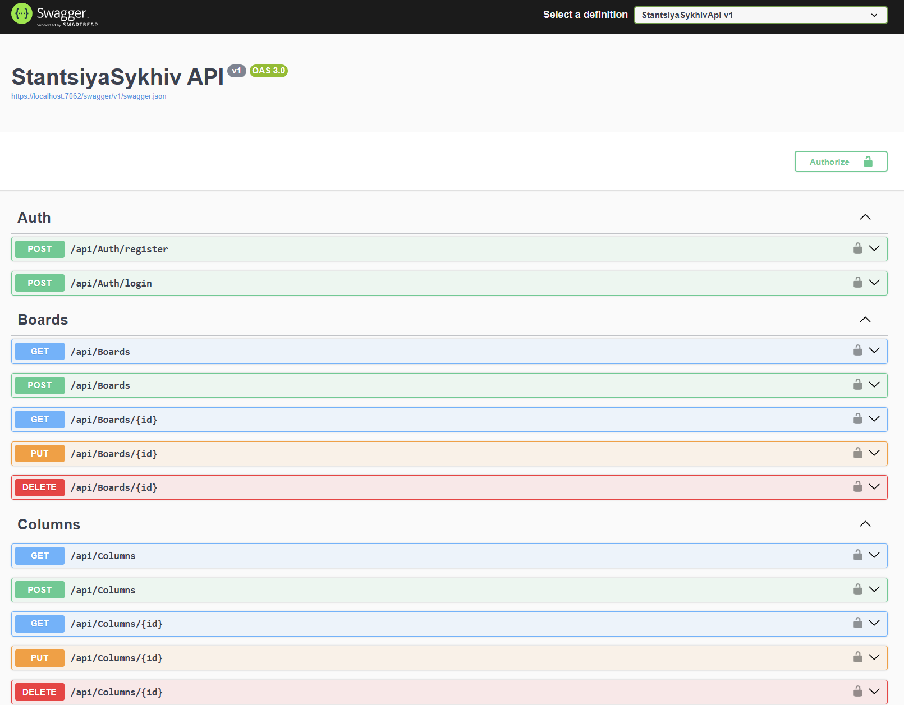
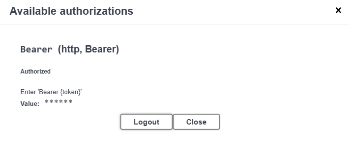
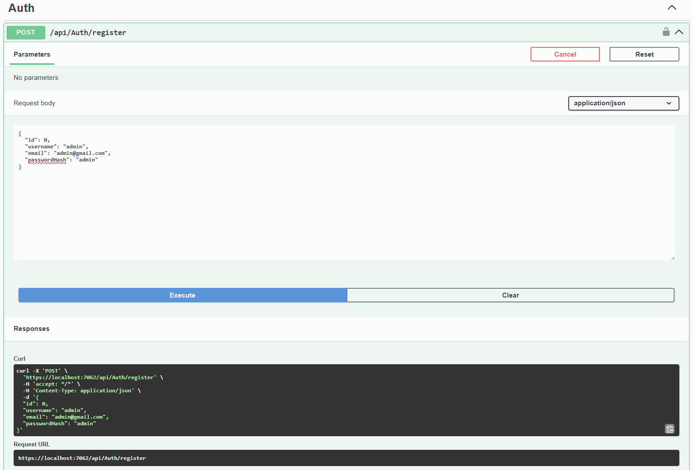
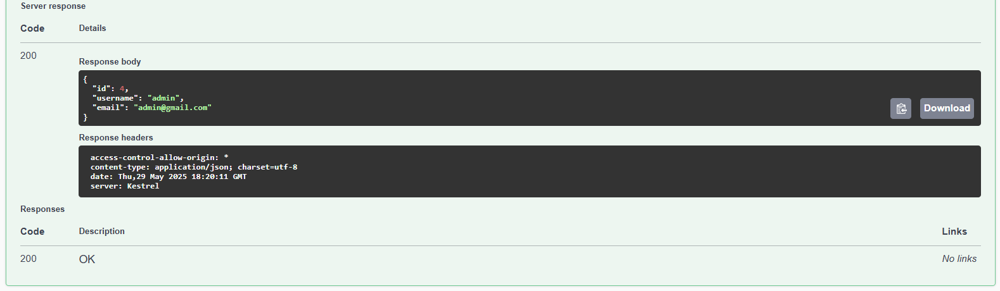
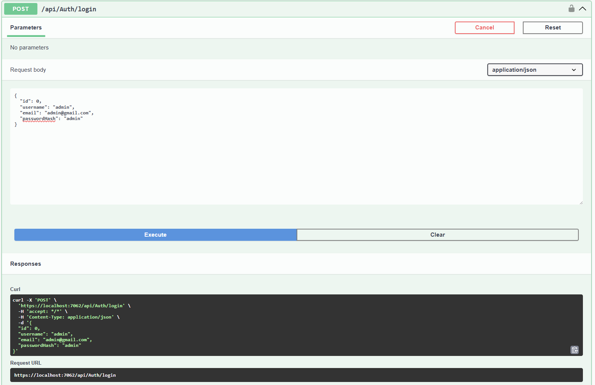
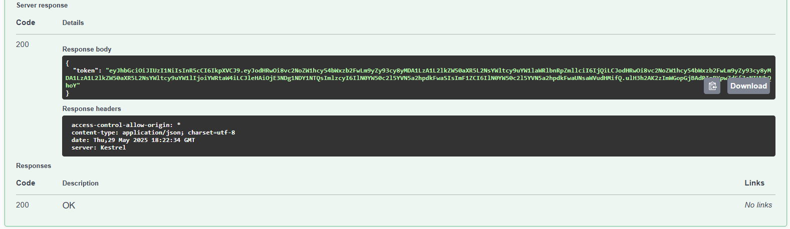
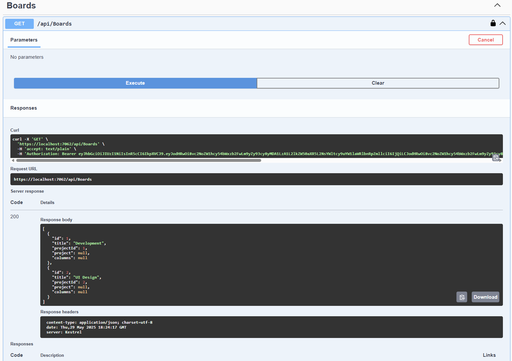
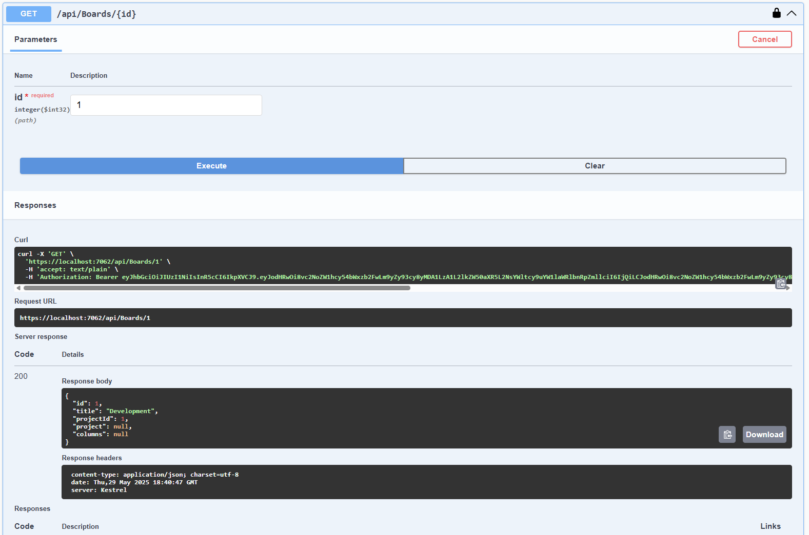
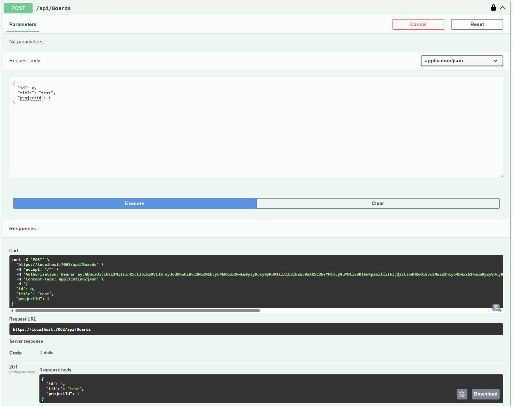
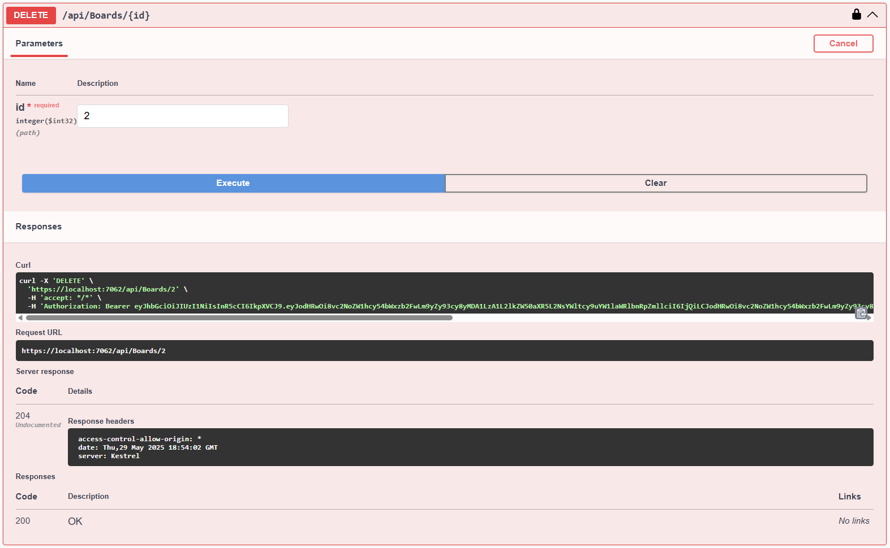

Виконали
Студенти 2-го курсу, групи ІО-33:
Поліщук Мирослав (лідер команди)
Чекун Микола
Рокицький Олександр
Бурденюк Дмитро
Скубко Артем
Шусторович Марк
Лісовський Назар
Телеграм: Поліщук Мирослав
Керівник
доцент кафедри ОТ ФІОТ, к.т.н., доцент Андрій БОЛДАК
НТУУ "КИЇВСЬКИЙ ПОЛІТЕХНІЧНИЙ ІНСТИТУТ імені ІГОРЯ СІКОРСЬКОГО
Факультет інформатики та обчислювальної техніки
Кафедра обчислювальної техніки
Київ
Вступ
Stantsiya Sykhiv (SS) – це легка у використанні та багатофункціональна система для управління проєктами з інтеграцією систем контролю версій. Розробка платформи спрямована на створення інтуїтивного інструменту, що поєднує простоту застосування з передовими технологічними рішеннями для ефективного планування, координації та контролю реалізації проєктів.
Мета проєкту - розробити універсальне рішення для організації спільної роботи над проєктами, яке забезпечує інтеграцію з провідними системами контролю версій, сприяє автоматизації процесів розробки, відслідковуванню змін та покращенню командної взаємодії.
Сучасні рішення, такі як GitHub Projects, Trello, Jira та Backlog, демонструють високий рівень функціональності, однак часто мають обмеження щодо гнучкості та масштабованості. Stantsiya Sykhiv (SS) інтегрує передові технічні підходи та відкриту архітектуру, що дозволяє ефективно взаємодіяти з іншими системами управління та забезпечує конкурентні переваги на ринку.
Основні технічні характеристики:
- Реляційна база даних: ефективне зберігання та обробка інформації.
- RESTful API: забезпечення надійної інтеграції з іншими сервісами.
- Модульна архітектура: гнучкість та можливість розширення функціоналу.
- Підтримка систем контролю версій: інтеграція з Git для відслідковування змін та покращення співпраці в команді.
Очікуваний технічно-економічний ефект:
- Створення стабільного, масштабованого продукту з високим рівнем надійсності.
- Залучення широкої аудиторії завдяки інтуїтивному інтерфейсу та широкому функціоналу.
- Оптимізація робочих процесів та взаємодії команди через ефективний контроль версій.
- Підвищення інвестиційної привабливості проєкту завдяки співпраці та комунікації.
Розроблення загальних вимог до системи
Аналіз предметної області
Вступ
Цей розділ присвячений аналізу предметної області для розробки системи управління проєктами Stantsiya Sykhiv. У ньому розглядаються основні поняття, аналізується життєвий цикл програмного забезпечення, а також проводиться порівняння різних методологій розробки та існуючих рішень у сфері управління проєктами.
Основна мета дослідження – виявити недоліки та обмеження наявних систем, щоб визначити потенційні можливості для вдосконалення. Це дозволить створити конкурентоспроможний продукт із унікальними перевагами, що відповідає сучасним вимогам ринку.
Зміст
- Основні визначення
- Підходи та способи вирішення завдань
- Порівняльна-характеристика-існуючих-засобів-вирішення-завданнь
- Висновки
- Посилання
Основні визначення
Система управління проєктами — це комплексне програмне забезпечення, що охоплює програми для планування завдань, складання розпису, контролю ціни і керування бюджетом, розподілу ресурсів, спільної роботи, спілкування, швидкого керування, документування та адміністрування системи, яке використовуються спільно для керування великими проєктами.
Управління проєктами — це область знань з планування, організації та управління ресурсами з метою успішного досягнення цілей та завершення завдань проєкту. Іноді ототожнюється з управлінням програмами, але програма — це фактично вищий рівень: група пов'язаних та взаємозалежних проєктів.
Проєкт — це обмежена в часі, ресурсах та вимогах якості унікальна сукупність процесів, направлена на створення нової цінності (продукту).
Методологія розробки програмного забезпечення — це сукупність методів, застосовуваних на різних стадіях життєвого циклу розробки програмного забезпечення, що мають спільний філософський підхід та, відповідно до цього підходу, дозволяють забезпечити найкращу ефективність процесів розробки.
Система керування версіями — це програмний інструмент для керування версіями одиниці інформації: початкового коду програми, скрипту, вебсторінки, вебсайту, 3D-моделі, текстового документу тощо.
CI/CD — це комбінована практика безперервної інтеграції (continuous integration) і безперервної доставки (continuous delivery) або, рідше, безперервного розгортання (continuous deployment).
Підходи та способи вирішення завданнь
Для ефективного вирішення завдання створення системи управління проєктами необхідно застосовувати сучасні підходи та методології розробки програмного забезпечення. Це стосується як побудови архітектури, так і використання інноваційних технологій, що дозволяють створювати масштабовані, надійні та продуктивні системи. Одним із ключових аспектів є впровадження гнучких методологій, таких як Agile та Scrum, які дозволяють швидко реагувати на зміни та оптимізувати процеси управління проєктами. Крім того, важливим є застосування автоматизованого тестування та механізмів безперервної інтеграції (CI/CD), що сприяє підвищенню якості коду та зниженню ризику помилок. Використання сучасних інструментів для моніторингу та аналітики допомагає оперативно виявляти проблеми, аналізувати ефективність роботи системи та здійснювати її оптимізацію на всіх етапах життєвого циклу. Для ефективного вирішення завданнь по створенню cистеми управління проєктами необхідно застосовувати сучасні підходи та методології розробки програмного забезпечення. Це стосується як побудови архітектури, так і використання інноваційних технологій, що дозволяють створювати масштабовані, надійні та продуктивні системи. Одним із ключових аспектів є впровадження гнучких методологій, таких як Agile та Scrum, які дозволяють швидко реагувати на зміни та оптимізувати процеси управління проєктами. Крім того, важливим є застосування автоматизованого тестування та механізмів безперервної інтеграції (CI/CD), що сприяє підвищенню якості коду та зниженню ризику помилок. Використання сучасних інструментів для моніторингу та аналітики допомагає оперативно виявляти проблеми, аналізувати ефективність роботи системи та здійснювати її оптимізацію на всіх етапах життєвого циклу.
Життєвий цикл програмного забезпечення
Життєвий цикл програмного забезпечення (SDLC) — це сукупність етапів, через які проходить програмне забезпечення від моменту його розробки до моменту виведення з експлуатації. Цей процес забезпечує структуру та порядок виконання робіт на кожному етапі розробки, що сприяє створенню надійного, ефективного та безпечного програмного продукту.

Серед основних етапів життєвого циклу програмного забезпечення розділяють:
- Аналіз. На цьому етапі визначаються основні вимоги до програмного продукту. Це включає як функціональні, так і нефункціональні вимоги. Наприклад, визначається, що система повинна робити, які її характеристики, обмеження по часу, безпеці, швидкості тощо.
- Проєктування. Розробляється архітектура програмного забезпечення та його компоненти. Визначаються структури даних, алгоритми, інтерфейси, вибір технологій для розробки.
- Розробка. На цьому етапі здійснюється безпосередня розробка коду згідно з визначеною архітектурою та вимогами. Програмісти пишуть код, тестують його, і, в разі потреби, коригують.
- Тестування. На етапі тестування перевіряється, чи працює програмне забезпечення відповідно до вимог. Це включає функціональні, нефункціональні, інтеграційні, системні та інші типи тестування.
- Встановлення та розгортання. Після завершення тестування програмне забезпечення розгортається в робочому середовищі. Здійснюється встановлення програмного продукту на сервери або на робочі станції користувачів, налаштування бази даних, сервісів і т.д.
- Експлуатація та підтримка. Після розгортання програмне забезпечення переходить до етапу експлуатації. Протягом цього періоду програмне забезпечення використовується в реальних умовах, і при необхідності проводиться коригування, виправлення помилок, оптимізація, а також випуск оновлень.
Життєвий цикл програмного забезпечення забезпечує систематичний підхід до розробки, тестування, розгортання та підтримки програмного продукту. Кожен етап життєвого циклу є критичним для досягнення високої якості кінцевого продукту та його успішного впровадження в реальному середовищі.
Методології розробки програмного забезпечення
Вибір методології розробки є ключовим етапом у створенні cистеми управління проєктами, оскільки від цього залежить швидкість впровадження, якість продукту та можливість гнучко адаптуватися до змін. Нижче розглянуто основні підходи, які можуть бути використані.
Agile
Методологія Agile (гнучка розробка) передбачає створення програмного забезпечення за допомогою ітераційного підходу, де кожен етап супроводжується тестуванням та оцінкою результатів. Основні принципи Agile базуються на Маніфесті гнучкої розробки, який включає такі ключові положення:
- Люди та взаємодія важливіші за процеси та інструменти – гнучкі команди самостійно організовують роботу та приймають рішення на основі поточних потреб проєкту.
- Працюючий продукт важливіший за документацію – головним показником успішності є створення реального, функціонального програмного забезпечення.
- Співпраця із замовником важливіша за контрактні зобов’язання – тісна комунікація між розробниками та користувачами дозволяє швидко адаптувати продукт до змінюваних вимог.
- Готовність до змін важливіша за слідування плану – гнучкий підхід дозволяє оперативно реагувати на нові вимоги та впроваджувати зміни без значних витрат.

Agile застосовується у випадках, коли вимоги до продукту можуть змінюватися в процесі розробки, і потрібно забезпечити швидку адаптацію до нових реалій. Цей підхід підходить для динамічних проєктів, де пріоритетом є швидкість та якість розробки.
Scrum
Scrum є одним із найпопулярніших фреймворків методології Agile, що використовується для управління розробкою програмного забезпечення. Основна його особливість – поділ розробки на короткі цикли (спринти), кожен з яких триває від 1 до 4 тижнів і завершується випуском робочої версії продукту.
Scrum базується на принципах емпіричного управління процесами, що означає адаптацію до змін, контроль над робочими процесами через прозорість, інспекцію та адаптацію. У Scrum існує кілька ключових ролей:
- Scrum Master – координатор, який забезпечує ефективну роботу команди, усуває перешкоди та допомагає дотримуватися принципів Scrum.
- Product Owner – відповідальний за визначення пріоритетів завдань, формування беклогу продукту та взаємодію з користувачами.
- Команда розробників – група спеціалістів, які самостійно планують виконання завдань та розподіляють роботу.

Основний робочий процес у Scrum включає:
- Формування беклогу продукту – список завдань, які необхідно реалізувати в майбутньому.
- Планування спринту – вибір завдань для виконання в поточному спринті.
- Щоденні стендапи (Daily Scrum) – короткі зустрічі, на яких обговорюється прогрес, проблеми та плани на день.
- Демонстрація інкременту – представлення результатів роботи замовникам та команді.
- Ретроспектива – аналіз того, що можна покращити в наступному спринті.
Scrum підходить для складних проєктів із мінливими вимогами, де важливо швидко адаптуватися до змін і мати гнучкий процес розробки.
Kanban
Kanban – це метод управління розробкою, що базується на візуалізації робочого процесу та оптимізації потоку завдань. Його основна концепція – Kanban-дошка, на якій відображаються завдання на різних етапах їх виконання (наприклад, "Зробити", "У процесі", "Готово").
Основні принципи Kanban:
- Візуалізація роботи – використання дошки для відстеження завдань у реальному часі.
- Обмеження кількості завдань у роботі (Work In Progress, WIP) – обмеження дозволяє уникнути перевантаження команди та зосередитися на пріоритетних завданнях.
- Постійне вдосконалення процесу – аналіз продуктивності та оптимізація робочого процесу.
Kanban добре підходить для команд, які працюють із потоком запитів (наприклад, підтримка клієнтів або технічне обслуговування), де важливо швидко реагувати на нові задачі та ефективно розподіляти робоче навантаження.

Waterfall
Waterfall – це класичний підхід до розробки ПЗ, який передбачає проходження чітко визначених етапів у строго заданому порядку. Основні фази Waterfall:
- Збір та аналіз вимог – визначення всіх функцій та можливостей майбутньої системи.
- Проєктування (дизайн) – розробка архітектури програмного забезпечення.
- Реалізація (кодинг) – безпосереднє програмування згідно зі специфікаціями.
- Тестування – перевірка правильності роботи системи.
- Розгортання та підтримка – випуск продукту та усунення можливих дефектів.
Основна перевага Waterfall – чітке планування та передбачуваність. Проте цей підхід не дуже добре підходить для проєктів, де можуть змінюватися вимоги, оскільки повернення до попередніх етапів є дорогим та складним.

DevOps
DevOps – це методологія, яка поєднує розробку (Development) та операційне управління (Operations), створюючи єдину культуру співпраці між командами. Основна мета DevOps – прискорити випуск оновлень і підвищити якість програмного забезпечення через автоматизацію та безперервну інтеграцію.
Основні принципи DevOps:
- Автоматизація процесів – використання CI/CD (Continuous Integration / Continuous Deployment) для автоматичного тестування та розгортання змін.
- Моніторинг та логування – постійний контроль продуктивності та аналіз помилок за допомогою таких інструментів, як Prometheus, Grafana, ELK Stack (Elasticsearch, Logstash, Kibana).
- Співпраця між командами – розробники, тестувальники та адміністратори працюють разом, щоб прискорити процес впровадження нових функцій.
- Інфраструктура як код (Infrastructure as Code, IaC) – використання таких інструментів, як Terraform та Ansible для управління інфраструктурою.
DevOps особливо ефективний для великих проєктів, де важлива швидкість оновлень, надійність системи та мінімізація простоїв.

Тестування програмного забезпечення
Тестування програмного забезпечення є невід'ємною частиною життєвого циклу розробки програмних продуктів. Воно допомагає виявити помилки, перевірити відповідність функціональним та нефункціональним вимогам, а також підвищити якість кінцевого продукту.
Види тестування
1. За рівнем тестування:
- Модульне тестування (Unit Testing) - тестування окремих модулів або компонентів програми.
- Інтеграційне тестування (Integration Testing) - перевірка взаємодії між модулями та сервісами.
- Системне тестування (System Testing) - тестування всієї системи в цілому.
- Приймальне тестування (Acceptance Testing) - перевірка відповідності програмного забезпечення бізнес-вимогам.
2. За способом виконання:
- Ручне тестування (Manual Testing) - тестування, що виконується без використання спеціальних інструментів автоматизації.
- Автоматизоване тестування (Automated Testing) - тестування, що виконується за допомогою скриптів та тестових фреймворків (Selenium, JUnit, Cypress тощо).
3. За типом тестування:
- Функціональне тестування (Functional Testing) - перевірка роботи програмного забезпечення згідно з вимогами.
- Нефункціональне тестування (Non-functional Testing):
- Продуктивність (Performance Testing) - тестування швидкодії, навантаження, стрес-тестування.
- Безпека (Security Testing) - перевірка на вразливості та захист від атак.
- Юзабіліті (Usability Testing) - оцінка зручності використання інтерфейсу.
- Сумісність (Compatibility Testing) - перевірка роботи на різних пристроях, ОС, браузерах.
4. За методом тестування:
- Чорна скринька (Black-box Testing) - тестування без знання внутрішньої реалізації.
- Біла скринька (White-box Testing) - тестування з доступом до коду.
- Сіра скринька (Gray-box Testing) - комбінований підхід, що включає знання частини реалізації.
Інструменти для тестування
- Selenium, Cypress – для автоматизації тестування веб-додатків.
- JUnit, TestNG – для тестування Java-додатків.
- Postman, SoapUI – для тестування API.
- JMeter, Gatling – для тестування продуктивності.
- OWASP ZAP, Burp Suite – для тестування безпеки.
Тестування забезпечує стабільність, надійність та високу якість програмного забезпечення, що допомагає зменшити ризики та витрати на підтримку продукту.
Інструменти для моніторингу і аналітики
Інструменти моніторингу та аналітики допомагають виявляти проблеми та оптимізувати виконання проєктів.
Zabbix використовується для контролю серверів та мереж: наприклад, він може відстежувати навантаження бази даних MySQL, налаштовувати сповіщення про критичні збої та візуалізувати продуктивність системи.
ELK Stack (Elasticsearch, Logstash, Kibana) ефективний для аналізу логів – його застосовують для моніторингу веб-серверів, де Logstash збирає дані, Elasticsearch швидко їх обробляє, а Kibana надає зручні графіки для аналізу запитів і помилок.
Для аналізу продуктивності застосовують New Relic, який дозволяє трасувати запити у веб-додатках. Наприклад, у Node.js-додатку він може показати, які запити до бази даних працюють найповільніше, допомагаючи їх оптимізувати.
Моніторинг автоматизує сповіщення та інтегрується з CRM або ERP для безперервного контролю процесів. Деякі рішення, як-от AIOps, використовують машинне навчання для прогнозування ризиків. У підсумку, такі системи забезпечують ефективне управління ресурсами та зменшують імовірність затримок.
Порівняльна характеристика існуючих засобів вирішення завданнь
GitHub Projects — це вбудований інструмент управління завданнями, який інтегрований безпосередньо в GitHub і дозволяє організовувати процес розробки за допомогою Kanban-дошок. Його основні можливості включають автоматизацію робочих процесів за допомогою GitHub Actions, зручне керування завданнями, а також тісну інтеграцію з GitHub Issues і pull requests, що дозволяє розробникам безпосередньо пов’язувати кодові зміни із завданнями. Крім того, GitHub Projects підтримує GitHub Pages, що дає змогу автоматично публікувати документацію чи вебсайти без додаткових зусиль. Цей інструмент чудово підходить для команд, які працюють у середовищі GitHub і хочуть мати єдину платформу для управління процесами розробки.
GitLab — це комплексна DevOps-платформа, яка об’єднує систему контролю версій, управління задачами, CI/CD і безпеку проєктів в одному місці. Вбудований таск-менеджер GitLab дозволяє створювати Kanban-дошки, планувати Roadmaps і відстежувати прогрес команди. Однією з ключових переваг є GitLab CI/CD, що дозволяє автоматизувати розгортання, тестування та інтеграцію змін у коді. Інструмент також підтримує GitLab Pages, що спрощує хостинг документації або вебсайтів. Завдяки інтеграції з Docker і Kubernetes, GitLab є ідеальним рішенням для DevOps-команд, які хочуть мати єдине середовище для всіх етапів розробки.
JIRA — це один із найпопулярніших інструментів управління проєктами та відстеження проблем, який надає широкі можливості як для великих, так і для малих команд. Він підтримує Agile-методології, такі як Scrum і Kanban, дозволяючи командам створювати та керувати беклогами, відстежувати статус завдань і аналізувати прогрес за допомогою графіків burndown та velocity charts. Завдяки глибокій інтеграції з GitHub, GitLab і Bitbucket, JIRA автоматично пов’язує кодові зміни з відповідними завданнями. Інструмент також підтримує інтеграцію з Jenkins, Bamboo та іншими CI/CD-рішеннями, що робить його потужним вибором для команд, які працюють над складними програмними продуктами.
Backlog — це зручна платформа для управління проєктами, яка об’єднує баг-трекінг, таск-менеджмент і контроль версій у єдиному просторі. Вона дозволяє організовувати задачі за допомогою Kanban-дощок, налаштовувати пріоритети та терміни виконання, а також вести документацію завдяки вбудованому модулю Wiki. Особливою перевагою є підтримка Git-репозиторіїв безпосередньо в проєкті, що дозволяє командам працювати над кодом без потреби у зовнішніх інструментах. Інтеграція з GitHub, GitLab та SVN дає змогу легко синхронізувати зміни. Завдяки доступній мобільній версії, Backlog зручний для команд, які хочуть поєднати керування задачами та версіонування коду в одному місці.
Redmine — це гнучка система управління проєктами з можливістю інтеграції з Git і SVN, яка дозволяє відстежувати задачі, контролювати дедлайни та вести документацію за допомогою вбудованого модуля Wiki. Однією з ключових особливостей Redmine є його модульна структура, що дозволяє розширювати функціональність через плагіни, зокрема для Agile-управління проєктами. Інструмент також підтримує гнучку систему звітності та аналітики, що допомагає командам відстежувати ефективність роботи. Завдяки можливості самостійного хостингу Redmine є ідеальним рішенням для компаній, які шукають безкоштовний інструмент із можливістю кастомізації під свої потреби.
Trello — це простий, візуально орієнтований таск-менеджер, який дозволяє організовувати робочий процес за допомогою Kanban-дощок і карток. Завдяки інтеграції з GitHub, GitLab та Bitbucket, розробники можуть пов’язувати задачі зі змінами у коді, відстежувати статус pull requests і автоматизувати робочі процеси за допомогою Power-Ups. Trello підтримує гнучку систему тегів, чеклістів і дедлайнів, що робить його зручним для організації командної роботи. Простий інтерфейс і мобільна підтримка роблять цей інструмент ідеальним вибором для невеликих команд або проєктів, яким потрібне легке та інтуїтивне керування завданнями.
ClickUp — це багатофункціональний таск-менеджер, який об'єднує управління задачами, документацією та аналітику в одному просторі. Його ключовою перевагою є гнучкість: користувачі можуть працювати в різних форматах, включаючи списки, Kanban-дошки та Gantt-діаграми. ClickUp підтримує інтеграцію з GitHub, GitLab і Bitbucket, що дозволяє автоматично відстежувати зміни у коді та пов’язувати їх із відповідними завданнями. Крім цього, система пропонує потужні можливості автоматизації, включаючи нагадування, залежності між задачами та розширену аналітику. Завдяки мобільній версії та веб-додатку ClickUp чудово підходить для команд, які шукають універсальне рішення для керування проєктами та відстеження продуктивності.
Порівняльна таблиця:
| Критерій | Наш проєкт | GitHub Projects | GitLab | JIRA | Backlog | Redmine | Trello | ClickUp |
|---|---|---|---|---|---|---|---|---|
| Functionality | ||||||||
| Kanban-дошки | ✅ | ✅ | ✅ | ✅ | ✅ | ✅ | ✅ | ✅ |
| Scrum-підтримка | ✅ | ❌ | ✅ | ✅ | ❌ | ⚠️ (через плагіни) | ❌ | ✅ |
| CI/CD інтеграція | ✅ | ✅ (GitHub Actions) | ✅ (GitLab CI/CD) | ✅ (Jenkins, Bamboo) | ❌ | ❌ | ❌ | ⚠️ (через інтеграції) |
| Управління кодом | ✅ | ✅ (GitHub) | ✅ (GitLab) | ⚠️ (через інтеграції) | ✅ (Git-репозиторії) | ✅ (Git, SVN) | ❌ | ⚠️ (через інтеграції) |
| Автоматизація | ✅ | ✅ | ✅ | ✅ | ⚠️ (обмежена) | ⚠️ (через плагіни) | ✅ (Power-Ups) | ✅ (автоматизації) |
| Usability | ||||||||
| Інтуїтивний інтерфейс | ✅ | ✅ | ⚠️ (складний для новачків) | ⚠️ (складний для новачків) | ✅ | ⚠️ (застарілий) | ✅ | ✅ |
| Гнучкість налаштувань | ✅ | ⚠️ (обмежена) | ✅ | ✅ | ✅ | ✅ | ⚠️ (мінімальна) | ✅ |
| Мобільна підтримка | ❌ | ✅ | ✅ | ✅ | ✅ | ⚠️ (обмежена) | ✅ | ✅ |
| Легкість впровадження | ✅ | ✅ | ⚠️ (потрібна підготовка) | ⚠️ (складне налаштування) | ✅ | ❌ | ✅ | ✅ |
| Інтеграції з іншими сервісами | ✅ | ✅ | ✅ | ✅ | ✅ | ⚠️ (через плагіни) | ✅ | ✅ |
| Reliability | ||||||||
| Відмовостійкість | ✅ | ✅ | ✅ | ✅ | ✅ | ✅ | ✅ | ✅ |
| Можливість резервного копіювання | ✅ | ✅ | ✅ | ✅ | ✅ | ✅ | ❌ | ✅ |
| Підтримка доступності 24/7 | ✅ | ✅ | ✅ | ✅ | ✅ | ⚠️ (залежить від хостингу) | ✅ | ✅ |
| Безпека доступу | ✅ | ✅ | ✅ | ✅ | ✅ | ✅ | ⚠️ (обмежена) | ✅ |
| Логування змін | ✅ | ✅ | ✅ | ✅ | ✅ | ✅ | ❌ | ✅ |
| Performance | ||||||||
| Швидкодія системи | ✅ | ✅ | ✅ | ✅ | ✅ | ⚠️ (можливі затримки) | ✅ | ✅ |
| Масштабованість | ✅ | ✅ | ✅ | ✅ | ✅ | ⚠️ (залежить від хостингу) | ✅ | ✅ |
| Робота з великими проєктами | ✅ | ✅ | ✅ | ✅ | ⚠️ (обмежено) | ⚠️ (можливі проблеми) | ❌ | ✅ |
| Швидке оброблення запитів | ✅ | ✅ | ✅ | ✅ | ✅ | ⚠️ (іноді повільно) | ✅ | ✅ |
| Невелике авантаження на сервер | ✅ | ✅ | ✅ | ✅ | ✅ | ⚠️ (залежить від налаштувань) | ✅ | ✅ |
| Supportability | ||||||||
| Доступність технічної підтримки | ⚠️ (обмежена) | ✅ | ✅ | ✅ | ✅ | ⚠️ (спільнота) | ✅ | ✅ |
| Оновлення та виправлення помилок | ✅ | ✅ | ✅ | ✅ | ✅ | ⚠️ (залежить від спільноти) | ✅ | ✅ |
| Наявність документації | ✅ | ✅ | ✅ | ✅ | ✅ | ✅ | ✅ | ✅ |
| Підтримка плагінів/розширень | ✅ | ⚠️ (обмежено) | ✅ | ✅ | ✅ | ✅ | ✅ | ✅ |
| Можливість кастомізації | ❌ | ⚠️ (обмежена) | ✅ | ✅ | ✅ | ✅ | ⚠️ (мінімальна) | ✅ |
Висновки
Попри велику кількість інструментів для управління проєктами, більшість із них не забезпечують необхідного балансу між функціональністю, доступністю та зручністю використання. Деякі сервіси обмежують критично важливі можливості платними підписками, тоді як інші мають складний інтерфейс або не покривають усіх потреб користувачів. Це створює ситуацію, коли командам доводиться комбінувати кілька різних платформ або ж миритися з обмеженнями поточних рішень.
Розробка нової системи управління проєктами, яка усуває ці недоліки, є не лише актуальним, а й стратегічно виправданим кроком. Інструмент, що пропонує інтуїтивний інтерфейс, необхідні функції без прихованих бар’єрів і гнучкість у налаштуваннях під різні робочі процеси, може суттєво змінити підхід до ведення проєктів. Крім того, інтеграція корисних можливостей, які зараз або відсутні, або реалізовані неефективно в конкурентних продуктах, стане важливою перевагою.
Таким чином, створення нового рішення має потенціал зайняти свою нішу на ринку та залучити широку аудиторію користувачів – від фрилансерів і невеликих команд до великих компаній. Орієнтація на реальні потреби, усунення існуючих проблем і впровадження інноваційних функцій зроблять цю систему ефективною альтернативою на фоні вже доступних платформ.
Посилання
Система управління проєктами
Запити зацікавлених осіб
Вступ
Система управління проєктами (СУП) – це програмне забезпечення, призначене для планування, організації, контролю та управління ресурсами проєкту. Даний документ описує вимоги до системи, включаючи її функціональні можливості, характеристики продуктивності, надійність та підтримку. Він містить загальний огляд, визначення основних термінів, сценарії використання та характеристики користувачів.
Мета
Метою створення цієї системи є впровадження інтегрованої платформи для управління проєктами, що дозволяє автоматизувати процеси планування, контролю виконання завдань, управління ресурсами та комунікацію між учасниками проєкту. Система повинна забезпечувати прозорість робочих процесів, підвищувати ефективність командної роботи та надавати аналітичні дані для прийняття рішень.
Контекст
Цей документ стосується інформаційної системи, яка буде використовуватися компаніями для управління проєктами будь-якої складності. Вона буде інтегруватися з існуючими системами контролю версій, комунікаційними платформами та інструментами для спільної роботи. Дана система може використовуватися в різних галузях, включаючи IT, будівництво, маркетинг та інші сфери, де необхідно координувати виконання завдань та контролювати ресурси.
Основні визначення та скорочення
- Система управління проєктами (СУП) – програмне забезпечення для організації, планування та моніторингу проєктної діяльності.
- Користувач – особа, що взаємодіє з системою (менеджер проєкту, виконавець, замовник).
- Завдання (Task) – одиниця роботи в межах проєкту.
- Дошка завдань (Task Board) – візуальне представлення списку завдань у різних станах виконання.
- Ресурси – матеріальні та нематеріальні активи, необхідні для реалізації проєкту.
- Sprint – короткий цикл виконання завдань у гнучких методологіях (Agile, Scrum).
- Backlog – список невиконаних завдань проєкту.
Посилання
Короткий зміст
Документ містить:
- Опис характеристик бізнес-процесів у контексті використання системи.
- Визначення основних функціональних можливостей системи.
- Огляд вимог до продуктивності, надійності та підтримки.
- Визначення категорій користувачів та їхніх очікувань від системи.
Характеристика ділових процесів
Бізнес-сценарій: Управління завданнями
Утворення акаунту
| ID: | CreateAccount |
|---|---|
| Назва: | Створення акаунту |
| Учасники: | Користувач, система |
| Передумови: | Користувач не має акаунту в системі |
| Результат: | Створено новий акаунт |
| Виключні ситуації: | - Обов’язкові поля не заповнені — NullReferenceException- Акаунт вже існує — UserAlreadyExistsException- Пароль не відповідає вимогам — NotStrongPasswordException |
| Основний сценарій: | 1. Користувач відкриває форму реєстрації 2. Вводить необхідні дані 3. Натискає "Зареєструватися" 4. Перевіряється коректність введених даних 5. Якщо всі перевірки пройдені, створюється акаунт |
Редагування інформації акаунту
| ID: | EditAccount |
|---|---|
| Назва: | Редагування інформації акаунту |
| Учасники: | Користувач, система |
| Передумови: | Користувач авторизований |
| Результат: | Оновлена інформація про акаунт |
| Виключні ситуації: | - Некоректний формат даних — InvalidDataException |
| Основний сценарій: | 1. Користувач переходить у налаштування акаунту 2. Вносить зміни 3. Натискає "Зберегти" 4. Перевіряється коректність введених даних 5. Якщо все коректно, оновлюється інформація про акаунт |
Видалення акаунту
| ID: | DeleteAccount |
|---|---|
| Назва: | Видалення акаунту |
| Учасники: | Користувач, система |
| Передумови: | Користувач авторизований |
| Результат: | Акаунт видалено |
| Виключні ситуації: | - Користувач не підтвердив видалення — CancelledOperationException |
| Основний сценарій: | 1. Користувач переходить у налаштування 2. Обирає "Видалити акаунт" 3. Підтверджує дію 4. Видаляється акаунт |
Створення проєкту
| ID: | CreateProject |
|---|---|
| Назва: | Створення проєкту |
| Учасники: | Користувач, система |
| Передумови: | Користувач авторизований |
| Результат: | Створено новий проєкт |
| Виключні ситуації: | - Некоректно введені дані — InvalidDataException |
| Основний сценарій: | 1. Користувач натискає "Створити проєкт" 2. Заповнює необхідні поля 3. Підтверджує дію 4. Перевіряється коректність введених даних 5. Якщо все коректно, створюється проєкт |
Редагування проєкту
| ID: | EditProject |
|---|---|
| Назва: | Редагування проєкту |
| Учасники: | Користувач, система |
| Передумови: | Користувач має дозвіл на редагування |
| Результат: | Оновлена інформація про проєкт |
| Виключні ситуації: | - Доступ заборонено — AccessDeniedException |
| Основний сценарій: | 1. Користувач відкриває проєкт 2. Вносить зміни 3. Натискає "Зберегти" 4. Перевіряється коректність введених даних 5. Якщо все коректно, зберігаються зміни |
Видалення проєкту
| ID: | DeleteProject |
|---|---|
| Назва: | Видалення проєкту |
| Учасники: | Користувач, система |
| Передумови: | Користувач має права на видалення |
| Результат: | Проєкт видалено |
| Виключні ситуації: | - Доступ заборонено — AccessDeniedException |
| Основний сценарій: | 1. Користувач відкриває проєкт 2. Натискає "Видалити" 3. Підтверджує дію 4. Видаляється проєкт |
Додавання учасників
| ID: | AddMembers |
|---|---|
| Назва: | Додавання учасників у проєкт |
| Учасники: | Адміністратор, система |
| Передумови: | Користувач має права на додавання |
| Результат: | Додані нові учасники |
| Виключні ситуації: | - Доступ заборонено — AccessDeniedException- Користувач уже в команді — UserAlreadyInTeamException |
| Основний сценарій: | 1. Адміністратор відкриває налаштування команди 2. Додає нових учасників, вводячи їхню пошту або ID 3. Перевіряється коректність введених даних 4. Якщо все коректно, додаються учасники |
Редагування дозволів учасників
| ID: | EditMemberPermissions |
|---|---|
| Назва: | Редагування дозволів учасників |
| Учасники: | Адміністратор, система |
| Передумови: | Користувач має права адміністратора |
| Результат: | Оновлені дозволи учасників |
| Виключні ситуації: | - Доступ заборонено — AccessDeniedException |
| Основний сценарій: | 1. Адміністратор відкриває список учасників 2. Змінює права доступу для конкретного користувача 3. Перевіряється коректність введених даних 4. Якщо все коректно, зберігаються зміни |
Видалення учасників
| ID: | RemoveMembers |
|---|---|
| Назва: | Видалення учасників із проєкту |
| Учасники: | Адміністратор, система |
| Передумови: | Користувач має права на видалення |
| Результат: | Учасника видалено з проєкту |
| Виключні ситуації: | - Доступ заборонено — AccessDeniedException |
| Основний сценарій: | 1. Адміністратор відкриває список учасників 2. Обирає учасників для видалення 3. Підтверджує дію 4. Видаляються учасники |
Створення завдання
| ID: | CreateTask |
|---|---|
| Назва: | Створення завдання |
| Учасники: | Користувач, система |
| Передумови: | Користувач має права на створення завдань у проєкті |
| Результат: | Створено нове завдання |
| Виключні ситуації: | - Некоректно введені дані — InvalidDataException- Доступ заборонено — AccessDeniedException |
| Основний сценарій: | 1. Користувач відкриває проєкт 2. Натискає "Створити завдання" 3. Вводить назву, опис, дедлайн, виконавців 4. Підтверджує дію 5. Перевіряється коректність введених даних 6. Якщо все коректно, створюється завдання |
Редагування завдання
| ID: | EditTask |
|---|---|
| Назва: | Редагування завдання |
| Учасники: | Користувач, система |
| Передумови: | Користувач має дозвіл на редагування завдання |
| Результат: | Оновлене завдання |
| Виключні ситуації: | - Доступ заборонено — AccessDeniedException |
| Основний сценарій: | 1. Користувач відкриває завдання 2. Вносить зміни (назва, опис, дедлайн, виконавці) 3. Натискає "Зберегти" 4. Перевіряється коректність введених даних 5. Якщо все коректно, зберігаються зміни |
Видалення завдання
| ID: | DeleteTask |
|---|---|
| Назва: | Видалення завдання |
| Учасники: | Користувач, система |
| Передумови: | Користувач має дозвіл на видалення завдання |
| Результат: | Завдання видалено |
| Виключні ситуації: | - Доступ заборонено — AccessDeniedException |
| Основний сценарій: | 1. Користувач відкриває завдання 2. Натискає "Видалити" 3. Підтверджує дію 4. Видаляється завдання |
Короткий огляд продукту
Система управління проєктами (СУП)
Система управління проєктами – це веб-платформа, розроблена для покращення координації командної роботи та оптимізації процесів управління проєктами. Вона допомагає компаніям ефективно планувати, контролювати та аналізувати виконання завдань, забезпечуючи прозорість робочих процесів.
Основна мета системи
- Автоматизація процесів управління проєктами.
- Мінімізація ризиків невчасного виконання завдань.
- Швидкий обмін інформацією між учасниками команди.
Система підтримує як традиційні підходи до управління проєктами, так і сучасні гнучкі методології (Agile, Scrum).
В основі роботи системи лежить інтерактивна платформа, що дозволяє:
- Створювати проєкти.
- Призначати відповідальних осіб.
- Встановлювати дедлайни.
- Розподіляти ресурси.
- Відстежувати статус виконання завдань.
Інтеграції
Система інтегрується з популярними сервісами для командної роботи:
- Google Calendar
- Slack
- Microsoft Teams
- Git (GitHub, GitLab, Bitbucket)
Це робить її універсальним рішенням для різних галузей бізнесу.
Гнучкість та доступність
Завдяки налаштуванню ролей та рівнів доступу, система підходить як для малих стартапів, так і для великих корпорацій. Користувачі отримують персоналізовані панелі з необхідними інструментами.
Система доступна у веб-версії та мобільному додатку, що дозволяє користувачам залишатися на зв’язку та оперативно реагувати на зміни.
Функціональність
Управління проєктами
- Створення, редагування, архівування проєктів
- Визначення цілей, дедлайнів і відповідальних осіб
- Створення та відстеження етапів виконання
Управління завданнями
- Додавання та редагування завдань
- Призначення виконавців і встановлення дедлайнів
- Відстеження статусу завдань (To Do, In Progress, Done)
- Візуалізація завдань у Kanban-дошці та списках
Календар та розклад
- Інтерактивний календар для перегляду дедлайнів
- Групування завдань за тижнями/місяцями
- Синхронізація з Google Calendar
Сповіщення та комунікація
- Автоматичні сповіщення про зміни у проєкті
- Вбудований чат для обговорення завдань
- Історія змін і коментарі
Аналітика та звітність
- Генерація детальних звітів щодо виконаних завдань
- Аналіз ефективності роботи команди
- Діаграми прогресу та використання ресурсів
Інтеграції
- Підключення до систем контролю версій (Git, GitHub, GitLab)
- Інтеграція з месенджерами (Slack, Microsoft Teams, Telegram)
- API для взаємодії з іншими сервісами
Система дозволяє працювати як у веб-версії, так і через мобільний додаток. Завдяки автоматизованим процесам та гнучким налаштуванням, вона допомагає компаніям зменшити затрати часу на управління проєктами та підвищити продуктивність команди.
Практичність
- Інтуїтивно зрозумілий інтерфейс — зручна навігація, простий дизайн, що не перевантажений зайвими елементами.
- Гнучка система налаштувань — можливість персоналізації інтерфейсу під потреби користувача.
- Мультимовна підтримка — доступність для користувачів різних країн.
- Кросплатформеність — коректна робота на Windows, macOS, Linux, а також у мобільних версіях (iOS, Android).
- Автоматичне збереження — запобігання втраті важливих змін при раптовому відключенні.
- Візуалізація даних — діаграми Ганта, канбан-дошки, графіки продуктивності та інші інструменти для зручного відстеження прогресу.
- Гарячі клавіші та швидкий доступ до основних функцій для підвищення ефективності.
- Імпорт та експорт даних — можливість інтеграції з іншими сервісами та збереження копій даних у зручному форматі.
Надійність
- Двофакторна аутентифікація (2FA) для захисту облікових записів.
- Розмежування прав доступу — чіткий поділ ролей між адміністраторами, менеджерами та учасниками проєкту.
- Система шифрування для захисту конфіденційної інформації та безпечного обміну даними.
- Захист від DDoS-атак та інших кіберзагроз для стабільної роботи системи.
- Автоматичне резервне копіювання для збереження та відновлення даних у разі збоїв або втрати доступу.
- Моніторинг активності — виявлення підозрілої поведінки та сповіщення адміністратора.
- Журнал дій користувачів для прозорості та відстеження внесених змін.
Продуктивність
- Оптимізована швидкість роботи — мінімальний час відгуку системи.
- Підтримка багатопоточності — можливість одночасної роботи великої кількості користувачів без втрати продуктивності.
- Хмарні технології — інтеграція з Google Drive, OneDrive, Dropbox для збереження великих обсягів даних.
- Оптимізація використання ресурсів — економне споживання процесорної потужності та пам’яті.
- Кешування часто використовуваних даних для прискорення завантаження та роботи інтерфейсу.
- Автоматичне оновлення інформації в реальному часі без необхідності ручного оновлення сторінки.
Експлуатаційна придатність
- Цілодобова технічна підтримка — швидке реагування на запити користувачів.
- Оновлення та виправлення багів — регулярні оновлення для поліпшення продуктивності та безпеки.
- Зворотний зв’язок із користувачами — можливість залишати пропозиції та отримувати персональні рекомендації.
- Висока стійкість до навантажень — стабільна робота навіть за великої кількості користувачів.
- Доступність на різних пристроях — підтримка мобільних додатків та веб-версії.
- Автоматична діагностика системи — перевірка справності всіх модулів та виявлення можливих проблем.
Розроблення функціональних вимог до системи
Модель прецедентів
Загальна схема

Користувач

Адміністратор

Сценарії використання
| ID: | CreateAccount |
|---|---|
| Назва: | Створення акаунту |
| Учасники: | Користувач, система |
| Передумови: | Користувач не має акаунту в системі |
| Результат: | Створено новий акаунт |
| Виключні ситуації: | - Обов’язкові поля не заповнені — NullReferenceException- Акаунт вже існує — UserAlreadyExistsException- Пароль не відповідає вимогам — NotStrongPasswordException |
| Основний сценарій: | 1. Користувач відкриває форму реєстрації 2. Вводить необхідні дані 3. Натискає "Зареєструватися" 4. Перевіряється коректність введених даних 5. Якщо всі перевірки пройдені, створюється акаунт |
| ID: | EditAccount |
|---|---|
| Назва: | Редагування інформації акаунту |
| Учасники: | Користувач, система |
| Передумови: | Користувач авторизований |
| Результат: | Оновлена інформація про акаунт |
| Виключні ситуації: | - Некоректний формат даних — InvalidDataException |
| Основний сценарій: | 1. Користувач переходить у налаштування акаунту 2. Вносить зміни 3. Натискає "Зберегти" 4. Перевіряється коректність введених даних 5. Якщо все коректно, оновлюється інформація про акаунт |
| ID: | DeleteAccount |
|---|---|
| Назва: | Видалення акаунту |
| Учасники: | Користувач, система |
| Передумови: | Користувач авторизований |
| Результат: | Акаунт видалено |
| Виключні ситуації: | - Користувач не підтвердив видалення — CancelledOperationException |
| Основний сценарій: | 1. Користувач переходить у налаштування 2. Обирає "Видалити акаунт" 3. Підтверджує дію 4. Видаляється акаунт |
| ID: | CreateProject |
|---|---|
| Назва: | Створення проєкту |
| Учасники: | Користувач, система |
| Передумови: | Користувач авторизований |
| Результат: | Створено новий проєкт |
| Виключні ситуації: | - Некоректно введені дані — InvalidDataException |
| Основний сценарій: | 1. Користувач натискає "Створити проєкт" 2. Заповнює необхідні поля 3. Підтверджує дію 4. Перевіряється коректність введених даних 5. Якщо все коректно, створюється проєкт |
| ID: | EditProject |
|---|---|
| Назва: | Редагування проєкту |
| Учасники: | Користувач, система |
| Передумови: | Користувач має дозвіл на редагування |
| Результат: | Оновлена інформація про проєкт |
| Виключні ситуації: | - Доступ заборонено — AccessDeniedException |
| Основний сценарій: | 1. Користувач відкриває проєкт 2. Вносить зміни 3. Натискає "Зберегти" 4. Перевіряється коректність введених даних 5. Якщо все коректно, зберігаються зміни |
| ID: | DeleteProject |
|---|---|
| Назва: | Видалення проєкту |
| Учасники: | Користувач, система |
| Передумови: | Користувач має права на видалення |
| Результат: | Проєкт видалено |
| Виключні ситуації: | - Доступ заборонено — AccessDeniedException |
| Основний сценарій: | 1. Користувач відкриває проєкт 2. Натискає "Видалити" 3. Підтверджує дію 4. Видаляється проєкт |
| ID: | AddMembers |
|---|---|
| Назва: | Додавання учасників у проєкт |
| Учасники: | Адміністратор, система |
| Передумови: | Користувач має права на додавання |
| Результат: | Додані нові учасники |
| Виключні ситуації: | - Доступ заборонено — AccessDeniedException- Користувач уже в команді — UserAlreadyInTeamException |
| Основний сценарій: | 1. Адміністратор відкриває налаштування команди 2. Додає нових учасників, вводячи їхню пошту або ID 3. Перевіряється коректність введених даних 4. Якщо все коректно, додаються учасники |
| ID: | EditMemberPermissions |
|---|---|
| Назва: | Редагування дозволів учасників |
| Учасники: | Адміністратор, система |
| Передумови: | Користувач має права адміністратора |
| Результат: | Оновлені дозволи учасників |
| Виключні ситуації: | - Доступ заборонено — AccessDeniedException |
| Основний сценарій: | 1. Адміністратор відкриває список учасників 2. Змінює права доступу для конкретного користувача 3. Перевіряється коректність введених даних 4. Якщо все коректно, зберігаються зміни |
| ID: | RemoveMembers |
|---|---|
| Назва: | Видалення учасників із проєкту |
| Учасники: | Адміністратор, система |
| Передумови: | Користувач має права на видалення |
| Результат: | Учасника видалено з проєкту |
| Виключні ситуації: | - Доступ заборонено — AccessDeniedException |
| Основний сценарій: | 1. Адміністратор відкриває список учасників 2. Обирає учасників для видалення 3. Підтверджує дію 4. Видаляються учасники |
| ID: | CreateTask |
|---|---|
| Назва: | Створення завдання |
| Учасники: | Користувач, система |
| Передумови: | Користувач має права на створення завдань у проєкті |
| Результат: | Створено нове завдання |
| Виключні ситуації: | - Некоректно введені дані — InvalidDataException- Доступ заборонено — AccessDeniedException |
| Основний сценарій: | 1. Користувач відкриває проєкт 2. Натискає "Створити завдання" 3. Вводить назву, опис, дедлайн, виконавців 4. Підтверджує дію 5. Перевіряється коректність введених даних 6. Якщо все коректно, створюється завдання |
| ID: | EditTask |
|---|---|
| Назва: | Редагування завдання |
| Учасники: | Користувач, система |
| Передумови: | Користувач має дозвіл на редагування завдання |
| Результат: | Оновлене завдання |
| Виключні ситуації: | - Доступ заборонено — AccessDeniedException |
| Основний сценарій: | 1. Користувач відкриває завдання 2. Вносить зміни (назва, опис, дедлайн, виконавці) 3. Натискає "Зберегти" 4. Перевіряється коректність введених даних 5. Якщо все коректно, зберігаються зміни |
| ID: | DeleteTask |
|---|---|
| Назва: | Видалення завдання |
| Учасники: | Користувач, система |
| Передумови: | Користувач має дозвіл на видалення завдання |
| Результат: | Завдання видалено |
| Виключні ситуації: | - Доступ заборонено — AccessDeniedException |
| Основний сценарій: | 1. Користувач відкриває завдання 2. Натискає "Видалити" 3. Підтверджує дію 4. Видаляється завдання |
Проєктування бази даних
Модель бізнес-об'єктів
ER-модель
Реляційна схема
Реалізація інформаційного та програмного забезпечення
SQL-скрипт для створення на початкового наповнення бази даних:
-- -----------------------------------------------------
-- Set custom settings
-- -----------------------------------------------------
SET
@old_unique_checks = IFNULL(@@unique_checks, 1),
unique_checks = 0,
@old_foreign_key_checks = IFNULL(@@foreign_key_checks, 1),
foreign_key_checks = 0,
@old_sql_mode = IFNULL(@@sql_mode, ''),
sql_mode = 'TRADITIONAL,ALLOW_INVALID_DATES';
-- -----------------------------------------------------
-- Schema taskmanagementsystem
-- -----------------------------------------------------
DROP DATABASE IF EXISTS `taskmanagementsystem`;
CREATE DATABASE IF NOT EXISTS `taskmanagementsystem` DEFAULT CHARACTER SET utf8;
USE `taskmanagementsystem`;
-- -----------------------------------------------------
-- Tables
-- -----------------------------------------------------
DROP TABLE IF EXISTS `user`;
CREATE TABLE IF NOT EXISTS `user` (
`id` INT NOT NULL AUTO_INCREMENT,
`username` VARCHAR(100) NOT NULL,
`email` VARCHAR(255) NOT NULL,
`password_hash` TEXT NOT NULL,
PRIMARY KEY (`id`),
UNIQUE INDEX `username_unique` (`username` ASC),
UNIQUE INDEX `email_unique` (`email` ASC)
) ENGINE=InnoDB;
DROP TABLE IF EXISTS `project`;
CREATE TABLE IF NOT EXISTS `project` (
`id` INT NOT NULL AUTO_INCREMENT,
`title` TEXT NOT NULL,
`description` TEXT NULL,
`owner_id` INT NOT NULL,
PRIMARY KEY (`id`),
INDEX `fk_project_user_idx` (`owner_id` ASC),
CONSTRAINT `fk_project_user`
FOREIGN KEY (`owner_id`)
REFERENCES `user` (`id`)
ON DELETE CASCADE
ON UPDATE CASCADE
) ENGINE=InnoDB;
DROP TABLE IF EXISTS `board`;
CREATE TABLE IF NOT EXISTS `board` (
`id` INT NOT NULL AUTO_INCREMENT,
`title` TEXT NOT NULL,
`project_id` INT NOT NULL,
PRIMARY KEY (`id`),
INDEX `fk_board_project_idx` (`project_id` ASC),
CONSTRAINT `fk_board_project`
FOREIGN KEY (`project_id`)
REFERENCES `project` (`id`)
ON DELETE CASCADE
ON UPDATE CASCADE
) ENGINE=InnoDB;
DROP TABLE IF EXISTS `column`;
CREATE TABLE IF NOT EXISTS `column` (
`id` INT NOT NULL AUTO_INCREMENT,
`title` TEXT NOT NULL,
`board_id` INT NOT NULL,
`order` INT NOT NULL,
PRIMARY KEY (`id`),
INDEX `fk_column_board_idx` (`board_id` ASC),
CONSTRAINT `fk_column_board`
FOREIGN KEY (`board_id`)
REFERENCES `board` (`id`)
ON DELETE CASCADE
ON UPDATE CASCADE
) ENGINE=InnoDB;
DROP TABLE IF EXISTS `task`;
CREATE TABLE IF NOT EXISTS `task` (
`id` INT NOT NULL AUTO_INCREMENT,
`title` TEXT NOT NULL,
`description` TEXT NULL,
`start_date` DATE NULL,
`end_date` DATE NULL,
`status` TEXT NOT NULL,
`project_id` INT NOT NULL,
`assignee_id` INT NULL,
PRIMARY KEY (`id`),
INDEX `fk_task_project_idx` (`project_id` ASC),
INDEX `fk_task_user_idx` (`assignee_id` ASC),
CONSTRAINT `fk_task_project`
FOREIGN KEY (`project_id`)
REFERENCES `project` (`id`)
ON DELETE CASCADE
ON UPDATE CASCADE,
CONSTRAINT `fk_task_user`
FOREIGN KEY (`assignee_id`)
REFERENCES `user` (`id`)
ON DELETE SET NULL
ON UPDATE CASCADE
) ENGINE=InnoDB;
DROP TABLE IF EXISTS `taskcolumnlink`;
CREATE TABLE IF NOT EXISTS `taskcolumnlink` (
`task_id` INT NOT NULL,
`column_id` INT NOT NULL,
PRIMARY KEY (`task_id`, `column_id`),
INDEX `fk_taskcolumnlink_task_idx` (`task_id` ASC),
INDEX `fk_taskcolumnlink_column_idx` (`column_id` ASC),
CONSTRAINT `fk_taskcolumnlink_task`
FOREIGN KEY (`task_id`)
REFERENCES `task` (`id`)
ON DELETE CASCADE
ON UPDATE CASCADE,
CONSTRAINT `fk_taskcolumnlink_column`
FOREIGN KEY (`column_id`)
REFERENCES `column` (`id`)
ON DELETE CASCADE
ON UPDATE CASCADE
) ENGINE=InnoDB;
DROP TABLE IF EXISTS `comment`;
CREATE TABLE IF NOT EXISTS `comment` (
`id` INT NOT NULL AUTO_INCREMENT,
`task_id` INT NOT NULL,
`author_id` INT NOT NULL,
`content` TEXT NOT NULL,
`timestamp` DATETIME NOT NULL,
PRIMARY KEY (`id`),
INDEX `fk_comment_task_idx` (`task_id` ASC),
INDEX `fk_comment_user_idx` (`author_id` ASC),
CONSTRAINT `fk_comment_task`
FOREIGN KEY (`task_id`)
REFERENCES `task` (`id`)
ON DELETE CASCADE
ON UPDATE CASCADE,
CONSTRAINT `fk_comment_user`
FOREIGN KEY (`author_id`)
REFERENCES `user` (`id`)
ON DELETE CASCADE
ON UPDATE CASCADE
) ENGINE=InnoDB;
-- -----------------------------------------------------
-- Restore original settings
-- -----------------------------------------------------
SET
sql_mode = @old_sql_mode,
foreign_key_checks = @old_foreign_key_checks,
unique_checks = @old_unique_checks;
SQL-скрипт для заповнення
INSERT INTO `user` (id, username, email, passwordHash)
VALUES
(1, 'geyorgiy', 'geyorgi228@example.com', 'passwordHash'),
(2, 'anna', 'anna@example.com', 'passwordHash2'),
(3, 'mark', 'mark@example.com', 'passwordHash3');
INSERT INTO `project` (id, title, description, owner_id)
VALUES
(1, 'task management project', 'a project for managing tasks', 1),
(2, 'website redesign', 'redesign company website', 2),
(3, 'mobile app development', 'develop new mobile app', 3);
INSERT INTO `board` (id, title, project_id)
VALUES
(1, 'main board', 1),
(2, 'redesign board', 2),
(3, 'app dev board', 3);
INSERT INTO `column` (id, title, board_id, `order`)
VALUES
(1, 'to do', 1, 1),
(2, 'in progress', 1, 2),
(3, 'done', 1, 3),
(4, 'backlog', 2, 1),
(5, 'design', 2, 2),
(6, 'testing', 3, 1);
INSERT INTO `task` (id, title, description, start_date, end_date, status, project_id, assignee_id)
VALUES
(1, 'set up project', 'initial setup of the project structure', '2025-05-20', NULL, 'to do', 1, 1),
(2, 'create wireframes', 'design wireframes for homepage', '2025-05-21', '2025-05-25', 'in progress', 2, 2),
(3, 'implement login', 'build login functionality', '2025-05-22', NULL, 'to do', 3, 3);
INSERT INTO `taskcolumnlink` (task_id, column_id)
VALUES
(1, 1),
(2, 5),
(3, 6);
INSERT INTO `comment` (id, task_id, author_id, content, timestamp)
VALUES
(1, 1, 1, 'do this', NOW()),
(2, 2, 2, 'wireframes need review', NOW()),
(3, 3, 3, 'login should be secure', NOW());
Тестування працездатності системи
Тестування здійснюється через застосунок StantsiyaSykhivApi за допомогою документації OpenAPI.
Головна сторінка

Автентифікація
    
Отримати всі дошки

Отримати дошку пo id

Створити нову дошку

Змінити існуючу дошку
Видалити дошку

Висновки
У процесі розробки системи Stantsiya Sykhiv (SS) було досягнуто основної мети — створення гнучкої, масштабованої та зручної у використанні платформи для управління проєктами з інтеграцією систем контролю версій. Завдяки використанню сучасних технологій, таких як RESTful API, реляційна база даних та модульна архітектура, вдалося реалізувати інструмент, який не лише задовольняє потреби командної роботи, а й забезпечує легку адаптацію до вимог різних команд розробників.
Проєкт демонструє високий рівень технічної реалізації та потенціал для подальшого розвитку: інтеграція з Git, підтримка масштабування та можливість розширення функціоналу роблять його конкурентоспроможним рішенням на фоні існуючих аналогів.
Stantsiya Sykhiv підтверджує актуальність поєднання простоти використання з потужним технічним підґрунтям, відкриваючи нові можливості для покращення командної взаємодії, автоматизації процесів та контролю змін. У перспективі система має потенціал для впровадження в реальні робочі середовища та подальшого вдосконалення через зворотний зв'язок від користувачів.